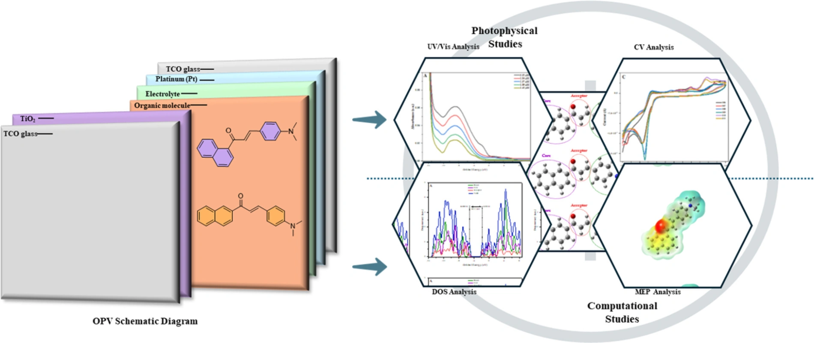

First-author research · 2025
Naphthyl chalcones
Reported compounds 14–18
Donor-substituted π-conjugated chalcones investigated through synthesis, photophysics, electrochemistry and DFT/TD-DFT. The published figures identify the series; exact coordinate-to-compound mapping is still needed.
2D publication reference · 3D coordinates pending verification